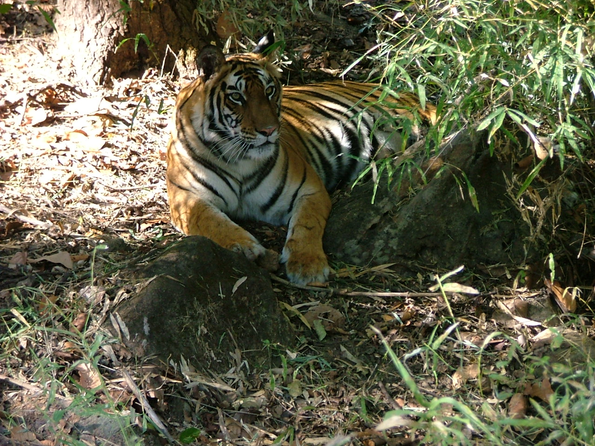

Kanha National Park
Kanha National Park, also known as Kanha Tiger Reserve, is a vast expanse of grassland and forest in the central Indian state of Madhya Pradesh. Tigers, jackals and wild pigs can be spotted in Kanha Meadows. The elevated plateau of Bamhnidadar is home to birds of prey. Animals often gather at the watering holes of Sondar Tank and Babathenga Tank. The park’s flora and fauna are documented in the park's Kanha Museum.
Fauna
Kanha Tiger Reserve has species of tigers, leopards, wild dogs, wild cats, foxes and jackals. Among the deer species, swamp deer (Cervus duavcelli branderi) or hard ground barasingha is pride of the place as it is the only subspecies of swamp deer in India, except the Great Swamp Deer of Sundarbans . The animal is adapted to hard ground unlike swamp deer of the north which live in marshy swamps. The reserve has been instrumental in rescuing the swamp deer from extinction. Indian gaur (Bos guarus), belonging to the ox genus, is found in Kanha but seen mostly as winter ends. In summer gaur inhabit meadows and water holes in the park.
Flora
Kanha Tiger Reserve is home to over 1000 species of flowering plants.The lowland forest is a mixture of sal (Shorea robusta) and other mixed forest trees, interspersed with meadows. The highland forests are tropical moist dry deciduous type and of a completely different nature with bamboo (Dendrocalamus strictus) on slopes. A very good looking Indian ghost tree (Davidia involucrata) can also be seen in the dense forest.Kanha Tiger Reserve abounds in meadows or maidans which are basically open grasslands that have sprung up in fields of abandoned villages, evacuated to make way for the animals. Kanha meadow is one such example. There are many species of grass recorded at Kanha some of which are important for the survival of barasingha (Cervus duvauceli branderi). Dense forested zones with good crown cover has abundant species of climbers, shrubs and herbs flourishing in the understory. Aquatic plants in numerous tal (lakes) are life line for migratory and wetland species of birds.
Kanha National Park
